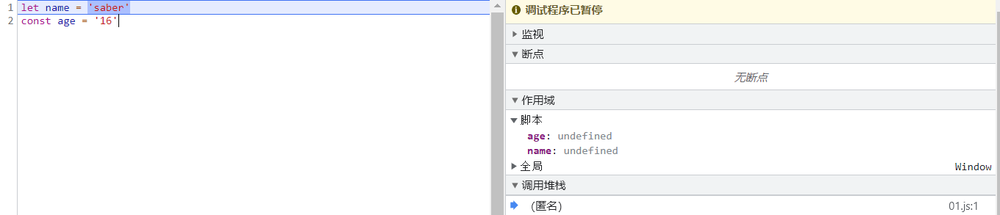

# 字面量增强写法
- ES6 中对 对象字面量 进行了增强，称之为 Enhanced object literals（增强对象字面量）。
- 字面量的增强主要包括下面几部分：
- 属性的简写：Property Shorthand
- 方法的简写：Method Shorthand
- 计算属性名：Computed Property Names
| const friends = ['樱岛麻衣', '小鸟游六花'] |
| |
| const Lain = { |
| |
| friends, |
| |
| |
| foo() { |
| console.log(this) |
| }, |
| |
| [friends + '->']: '蝶祈' |
| } |
| |
| Lain.foo() |
| |
| |
| console.log(Lain) |
# 数据解构
- ES6 中新增了一个从数组或对象中方便获取数据的方法，称之为解构 Destructuring。
- 我们可以划分为：数组的解构和对象的解构。
- 数组的解构： 基本解构过程，顺序解构，解构出数组，默认值
| const friends = ["樱岛麻衣", "蝶祈", "小鸟游六花"] |
| |
| |
| const [f1, f2, f3] = friends |
| console.log(f1, f2, f3) |
| |
| |
| const [, , fx] = friends |
| console.log(fx) |
| |
| |
| const [fr1, ...fris] = friends |
| console.log(fr1, fris) |
| |
| |
| const [fri1, fri2, fri3, fri4 = "saber"] = friends |
| console.log(fri4) |
- 对象的解构： 基本解构过程，任意顺序，重命名，默认值
| const lain = { |
| name: "lain", |
| age: 16 |
| } |
| |
| |
| const { name, age } = lain |
| console.log(name, age) |
| |
| |
| const { name: newName } = lain |
| console.log(newName) |
| |
| |
| const { friends: newFriends = "樱岛麻衣" } = lain |
| console.log(newFriends) |
| |
| |
| function foo({name, age}) { |
| console.log(name, age) |
| } |
| |
| foo(lain) |
# var & let & const
- 在 ES5 中我们声明变量都是使用的 var 关键字，从 ES6 开始新增了两个关键字可以声明变量：let、const
- let、const 在其他编程语言中都是有的，所以也并不是新鲜的关键字；
- 但是 let、const 确确实实给 JavaScript 带来一些不一样的东西；
- let 关键字：从直观的角度来说，let 和 var 是没有太大的区别的，都是用于声明一个变量
- const 关键字是 constant 的单词的缩写，表示常量、衡量的意思；它表示保存的数据一旦被赋值，就不能被修改；但是如果赋值的是引用类型，那么可以通过引用找到对应的对象，修改对象的内容；
- 注意：let、const 是不允许重复声明；
# let & const 基本使用
| let name = 'saber' |
| const age = 16 |
| |
| const lain = { |
| name: 'lain', |
| friends: ['樱岛麻衣', '薇尔莉特'] |
| } |
| |
| lain.friends = ['saber'] |
# let & const 有没有作用域提升呢？
- 在执行上下文的词法环境创建出来的时候，变量事实上已经被创建了，只是这个变量是不能被访问的。
- 那么变量已经有了，但是不能被访问，是不是一种作用域的提升呢？
- 事实上维基百科并没有对作用域提升有严格的概念解释，那么我们自己从字面量上理解；
- 作用域提升：在声明变量的作用域中，如果这个变量可以在声明之前被访问，那么我们可以称之为作用域提升；
- 在这里，它虽然被创建出来了，但是不能被访问，我认为不能称之为作用域提升；
- 所以我的观点是 let、const 没有进行作用域提升，但是会在解析阶段被创建出来。
| let name = 'saber' |
| const age = '16' |
可以参考在 Google 测试的结果！

# var 全局污染
| var name = 'saber' |
| var age = '16' |
| var pageXOffset = function () { |
| console.log(window.pageXOffset) |
| } |
| console.log(window.name) |
| console.log(window.age) |
| window.pageXOffset() |
- 通过 var 声明，会被记录在全局，这样有可能造成 事件 被覆盖，这会带来很大的安全隐患。
变量被保存到 VariableMap 中
-
我们声明的变量和环境记录是被添加到变量环境中的：
- 但是标准有没有规定这个对象是 window 对象或者其他对象呢？
- 其实并没有，那么 JS 引擎在解析的时候，其实会有自己的实现；
- 比如 v8 中其实是通过 VariableMap 的一个 hashmap 来实现它们的存储的。
- 那么 window 对象呢？而 window 对象是早期的 GO 对象，在最新的实现中其实是浏览器添加的全局对象，并且一直保持了 window 和 var 之间值的相等性；
| |
| class VariableMap : public ZoneHashMap { |
| public: |
| explicit VariableMap(Zone* zone); |
| VariableMap(const VariableMap& other, Zone* Zone); |
| |
| VariableMap(VariableMap&& other) V8_NOEXCERT : ZoneHashMap(std::move(other)) {... |
| } |
# ES6 块级作用域
| |
| |
| { |
| let name = "saber" |
| function foo() { |
| console.log("foo function") |
| } |
| class Characters {} |
| } |
| |
| |
| |
# if & switch & for 块级作用域
| if (true) { |
| var foo = "foo" |
| let bar = "bar" |
| } |
| |
| console.log(foo) |
| |
| var flag = true |
| |
| switch (flag) { |
| case true: |
| var foo = "foo" |
| let bar = "bar" |
| } |
| |
| console.log(foo) |
| |
| for (var i = 0; i < 3; i++) {} |
| console.log(i) |
| |
| for (let j = 0; j < 3; j++) {} |
| console.log(j) |
# let & const 暂时性死区
| var flag = true |
| |
| if (flag) { |
| console.log(flag) |
| |
| let flag = false |
| } |
| |
| function foo() { |
| console.log(flag) |
| |
| let flag = false |
| } |
| |
| foo() |
| var flag = true |
| |
| if (flag) { |
| console.log(flag) |
| |
| const flag = false |
| } |
| |
| |
| function foo() { |
| console.log(flag) |
| |
| const flag = false |
| } |
| |
| foo() |
# 经典面试题
-
点击按钮获取元素和下标？
-
一般使用立即执行函数闭包形式 来解决这个问题
| window.addEventListener('load', () => { |
| const btns = document.querySelectorAll('button') |
| for (var i = 0; i < btns.length; i++) { |
| (function(i) { |
| btns[i].onclick = function() { |
| console.log(`第${i}个按钮被点击`) |
| } |
| })(i) |
| } |
| console.log(i) |
| }) |
| window.addEventListener('load', () => { |
| const btns = document.querySelectorAll('button') |
| for (let i = 0; i < btns.length; i++) { |
| btns[i].onclick = function () { |
| console.log(`第${i}个按钮被点击`) |
| } |
| } |
| |
| }) |
# var & let & const 的选择
- 那么在开发中，我们到底应该选择使用哪一种方式来定义我们的变量呢？
- 对于 var 的使用：
- 我们需要明白一个事实，var 所表现出来的特殊性：比如作用域提升、window 全局对象、没有块级作用域等都是一些历史遗留问题；
- 其实是 JavaScript 在设计之初的一种语言缺陷；
- 当然目前市场上也在利用这种缺陷出一系列的面试题，来考察大家对 JavaScript 语言本身以及底层的理解；
- 但是在实际工作中，我们可以使用最新的规范来编写，也就是不再使用 var 来定义变量了；
- 对于 let、const：
- 对于 let 和 const 来说，是目前开发中推荐使用的；
- 我们会有限推荐使用 const，这样可以保证数据的安全性不会被随意的篡改；
- 只有当我们明确知道一个变量后续会需要被重新赋值时，这个时候再使用 let；
- 这种在很多其他语言里面也都是一种约定俗成的规范，尽量我们也遵守这种规范；